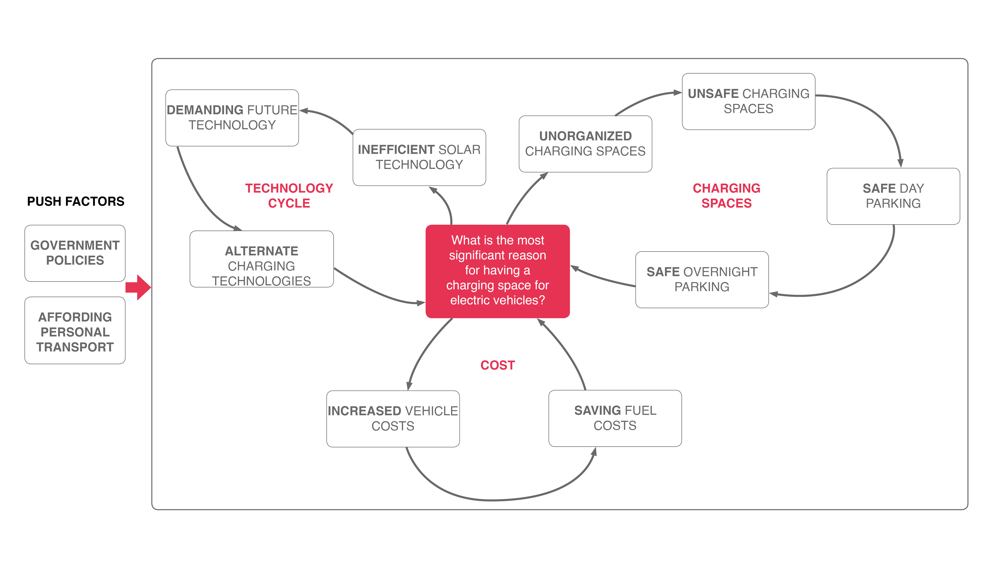
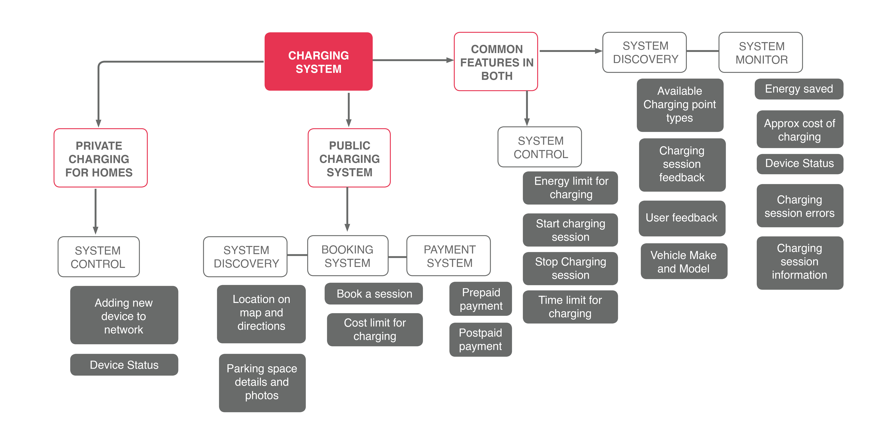
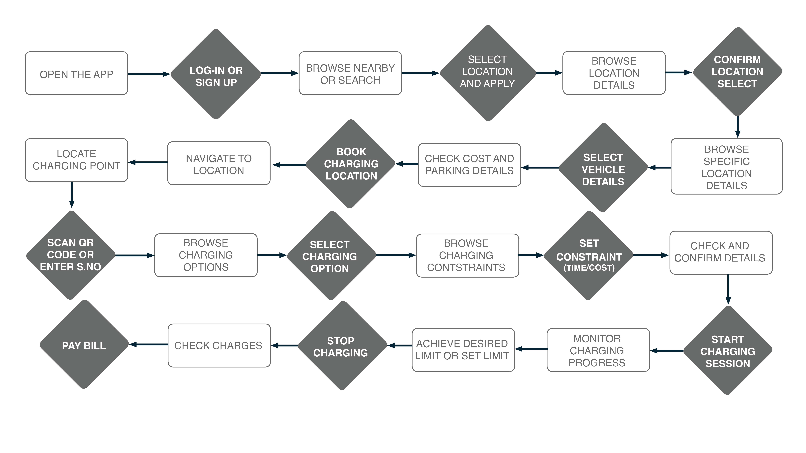
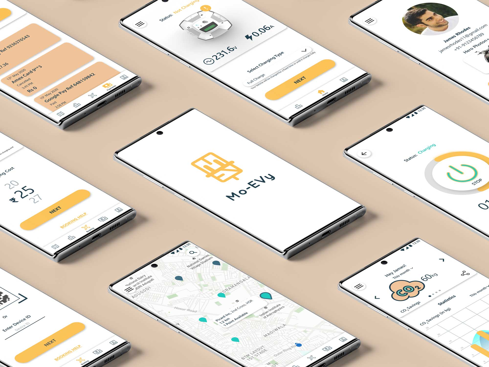
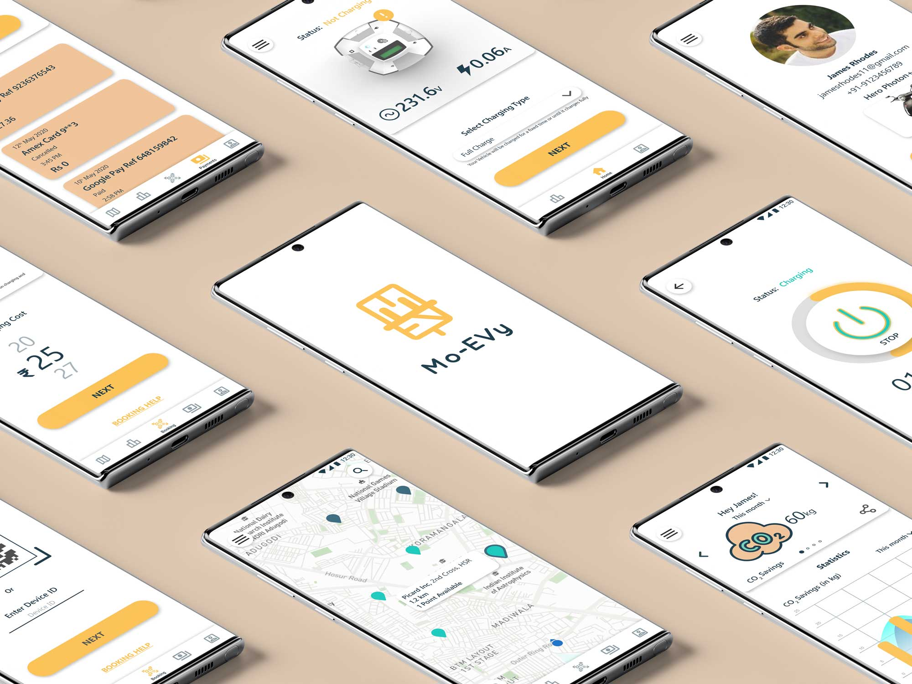

MoEVY Mobile App
Companion App for the MoEVY charger


The companion app is designed to work in both public and private charging scenarios as identified in the design of the charging device. The app links to the charger and provides information and control of the charging. Additionally, in a public charging use case, payment is integrated in the system
The System Dynamic Model here is constructed from the abstracted observations and interview verbatim from the users to determine what is the perception of users regarding the current ecosystem, i.e., their reason for wanting a EV charging space and electric vehicles in general.

The system architecture was arrived at using an online closed card sorting exercise with 10 participants. The card sorting exercise was done using an online tool and shared to the respondents of the survey. The structure was arrived by using a similarity matrix of the responses of the card-sort.
Task: Finding a charging spot and charging vehicle.
Scenario: Public shared parking space It follows the logical sequence of steps that a user would take in order to charge his vehicle using a public charging station. It is based on the amalgamation of the various user interviews done during the research phase.
Low fidelity wireframes were sketched for each of the main functions and a full flow for finding a charging station is sketched above. Other functions like user profile and payment options, charging and statistics were added from the system architecture diagram.


 
